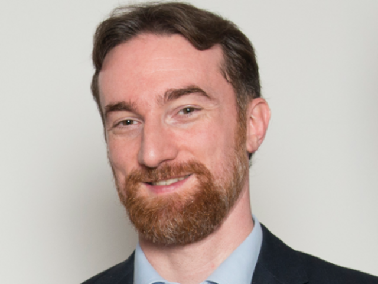

Speakers and Talks
foss-north 2022 has been converted to a virtual conference due to the COVID situation.

Silona Bonewald
It takes a Village - Role Diversity in Open Source
IEEE is a NonProfit with over 420K members in 180 Countries. We wanted to create a platform that would be in existence not for the next 3-5 years but instead for the next couple of decades to support our standards making process. We have a very diverse community. One of the first things we decided to focus on is Role Diversity. In this presentation, we will talk about how volunteers are creating groups and processes in a transparent fashion. Being 100% Open Source is a key philosophy that drives this community forward. I will review our entire community architecture and its evolution in the past year. We believe that diversity is key to both sustainability and quality. I will cover all the work done globally by our volunteers to support this.
Silona Bonewald is the Executive Director for IEEE SA OPEN, a comprehensive platform offering the open source community cost-effective options for developing and validating their projects. Previously she was vice president of community architecture at Hyperledger, a global open source collaborative effort hosted by The Linux Foundation, where she integrated leaders in finance, banking, Internet of Things (IoT), supply chains, and manufacturing. Other notable career accomplishments include, while with PayPal, pioneering the InnerSource process; for Siemens AG, creating a cutting-edge and Six Sigma-compliant e-commerce website; and for Ubisoft, creating an international content management system (CMS) architecture.

Julian Coccia
Open Source SCA
SCANOSS disrupts the SCA market by offering the first fully Open Source SCA Platform. From the mining tools to the database engine, scanning engine, CLIs to a fully featured Multiplatform Auditing UI. It is all pure open source and available to use. SCANOSS aims at commoditising Open Source Risk Management and driving massive SBOM adoption not only for large corporations, but also for independent developers and SMEs who are key parts of the Software Supply Chain.
Passionate about Open Source license compliance. Developed global Open Source processes and tools at Ericsson. Co-founded and developed the core technology at FOSSID. Driving the Project Office at the Software Transparency Foundation to drive SBOM adoption. Leading the technology at SCANOSS.

Dimitur Jilanov
React Security
JavaScript has had a long history of general security risks associated with it and React — the most popular open-source JavaScript library for building user interfaces or UI components — is no exception. React's security vulnerabilities, although not visible to the naked eye, can prove to be fatal for a web application and cost millions.
Raising awareness about some common security mistakes in React and effective solutions to overcome them, is the only way to avoid implications, eventual security leaks, and hacks in every web app.
Dimitur Jilanov is a senior web engineer at Motion Software with 10+ years of experience and over 20 projects with the most popular frameworks (i.e. React, Vue.js, Angular, NativeScript, React Native, Flutter). His specialities are Web and mobile development, and Blockchain technology. Dimitur has won 1st place in several hackathons as well as participated in numerous international conferences, sharing his thoughts on web and mobile development trends.
Dimitur is currently helping a client to build an innovative product which gives the users a complete overview of the trends in the Real Estate industry. Along with that, Dimitur is an honourable lecturer at Software University (Bulgaria).
Rahul Mohan G
Eclipse Oniro compliance toolchain
Rahul will support the QA session of the talk.
Rahul has been working in license compliance audit of open source software for more than ten years. He was working for Siemens Technologies and Services Pvt. Ltd. till last year and now, working as open source software license auditor in Huawei Technologies Pvt. Ltd.

Carlo Piana
Eclipse Oniro compliance toolchain
Oniro is a Free and Open Source Software, multi-platform, multi-kernel, low spec and embedded interoperable operating system based on Yocto Bitbake. In this context, from the same code base, many different images can be built, with a build matrix counting more than 40 different target images, all containing different sets of software components: which in concrete means millions of source files and -- licensing wise -- a nightmare. Bitbake is incredilby flexible, but not quite transparent as to what software is summoned in. Taming this complexity has required a new approach and developing new tools and procedures, also incorporating CVE scanning and security elements, a dedicated dashboard and Aliens4friends, our solution to find licensing information to package matching. Our presentation is a show-and-tell of how we produced a SBOM for as many as 2,000,000 files and almost 300 different licenses with a team of 3.5, also discussing the challenges and some odd discovery about popular packages.
Lawyer with 25+ years experience in IT law, has been active since early 2000's in Free and Open Source Software advocacy. General Counsel of the Free Software Foundation Europe for nearly 10 years Carlo has been one of the most vocal experts in the public discourse around FOSS, Editor since its inception of the International Free and Open Source Software Law Review (now Jolts) and author of many publications, including a book selected in Italy for free distribution in schools by Wikimedia Italia. Founder of Array, he is now representative for his firm as Silver Member of Eclipse Oniro Working Group within the Eclipse Foundation, contributing with his colleague Alberto Pianon in an Open Source compliance toolset and OpenChain conformance for an entire operating system for embedded and IoT devices.

Alberto Pianon
Eclipse Oniro compliance toolchain
Alberto will support the QA session of the talk.
A long standing activist and user of Free and Open Source Software, Alberto is a qualified lawyer in private practice in Vicenza, Italy. His practice covers intellectual property, cyberlaw and copyright law, with a particular focus on open source licensing and compliance, especially in the embedded/IoT field. He is one of the founding members of Array Law Firm (https://www.array.eu), member of the Legal Network of the FSFE and partner of OpenChain in Europe (as member of Array). Supporter of FSFE’s Free Your Android initiative and advocate of private cloud and self-hosting solutions. Used to read and write code in Python, PHP, Javascript, shell scripting, Java, C++ as a substantial part of his audit and compliance work on complex projects.

Marta Rybczynska
What should I know about secure boot and TEEs?
The trusted computing landscape could be hard to understand for newcomers. Just at the beginning, they encounter a number of abbreviations like TEE, OPTEE, SEV, TF-A, TF-M and many more.
In this talk Marta is going to present a map of the trusted computing landscape, explaining different types hardware of support. She is going to put it in a context of implementing secure boot and trusted execution in an embedded distribution, namely Yocto-based Eclipse Oniro project.
The talk will include a map of trusted hardware technologies, illustrate how they are (or are expected to) be used, which market needs they address. Marta will show how they could be used in practice in an embedded distribution. The example will be the secure boot work in the Eclipse Oniro project, an embedded multi-OS distribution for Internet of Things (IOT) devices. The multi-OS specificity of Oniro will be used how the trusted computing technologies compare on different types of processors running Linux and Zephyr, with different security hardware support.
Marta Rybczynska has network security background, 20 years of experience in Open Source including 15 years in embedded development.
She has been working with embedded operating systems like Linux and various real-time ones, system libraries and frameworks up to user interfaces. Her specialties are architecture-specific parts of the Linux kernel. In the past, Marta served as Vice-President and treasurer for KDE e.V. She has been involved in various Open Source projects, and also contributing kernel-related guest articles for LWN.net.
In 2021, she founded Syslinbit, an Open Source consulting company. She has been contributing to the Eclipse Oniro project from April 2021.
She has experience with presentations on both scientific and free software conferences, including LinuxCon, Open Source Summit, Embedded Linux Conference, Akademy, FOSDEM and FOSS-north.

Italo Vignoli
LibreOffice Technology, a FOSS platform for personal productivity
LibreOffice was announced in 2010 as a desktop productivity software for Windows, macOS and Linux. Since 2011, it has evolved from a single desktop product to a technology platform supporting applications for the desktop, the cloud and mobile. All products share the same engine, which provides superior consistency. The goal of the presentation is to present the different stages of this evolution.
Italo Vignoli is a founding member of The Document Foundation, the Chairman Emeritus of Associazione LibreItalia, an Open Source Initiative (OSI) board member, and co-chair of the ODF Advocacy OASIS Open Project. He co-leads LibreOffice marketing, PR and media relations, co-chairs the certification program, and is a spokesman for the project. He has contributed to large migration projects to LibreOffice in Italy, and is a LibreOffice certified migrator and trainer. From 2004 to 2010 he has been involved in the OOo project.

Florian Wagner
Qemu Demistified
Qemu is a powerful tool and in my view one part of the hardware renaissance around RISCV. But like most it comes with trade-offs. Due to the power of the first freedom we are able to learn these tradeoffs from the source, literally. This talk is an active exercise of this freedom, highlighting the inner working of qemu by leveraging the open source, mailing list and related documentation.
Driven by a desire to understand the insides of software Florian has always been drawn to the underlying technologies. Most recently this has led to thinking about how knowledge about these technologies is gained and communicated.